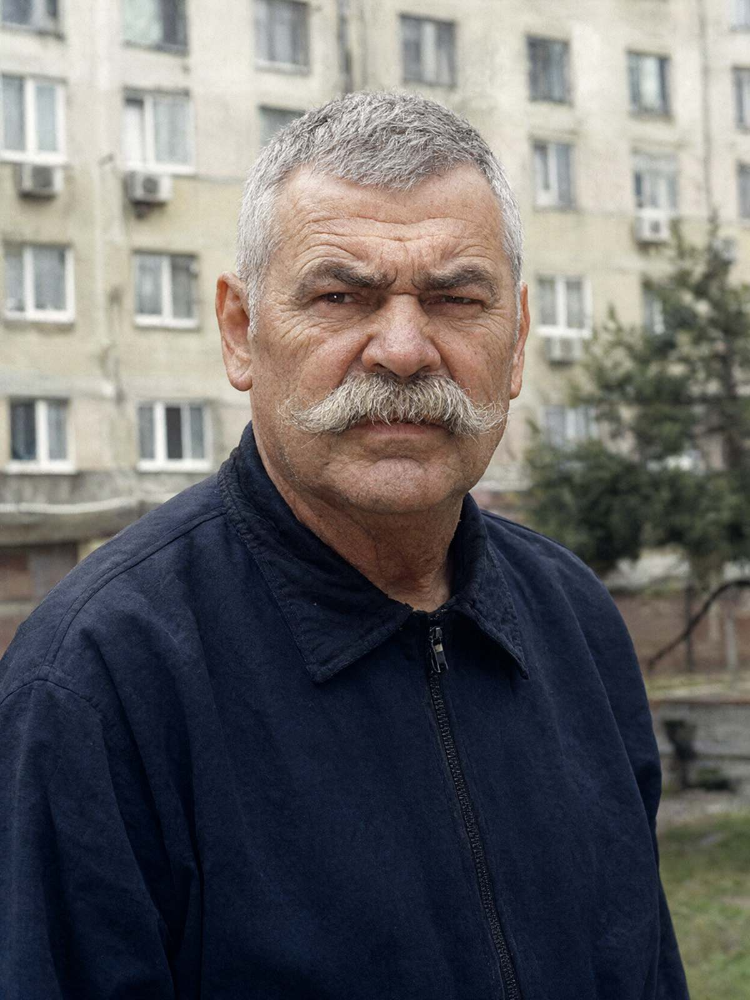

Місто: Івано-Франківськ
Дата: 16.10.2026
Час початку: 19:00 Час закінчення: 19:55
Місце: ЖК «Дем'янів лаз», вул. Пасічна, 41, секція 2, кв. 47 (за місцем проживання)
Відібрав: майор поліції Волков Д.С., старший слідчий в ОВС СУ ГУНП в Івано-Франківській області
Особа: Маланюк Ігор Богданович, 63 р., голова ОСББ «Дем'янів лаз», майор у відставці, проживає: вул. Пасічна, 41, секція 2, кв. 47 (5-й поверх, балкон виходить на двір і город за адресою Пасічна, 41-А), тел. +380 50 118 63 63.
Особі роз'яснено право не свідчити щодо себе та близьких родичів (ст. 63 Конституції України). Пояснення надає добровільно. Перші десять хвилин розповідав, як у 2023 р. «виграв у забудовника пандус», — у пояснення не внесено.
Питання: Ви писали в чаті мешканців Палійчуку: «Колись я тебе разом із твоїм джипом сам закатаю в асфальт». Поясніть.
Відповідь: Ну написав. Про асфальт — то я образно, пане майоре. Він свій танк ставив на пожежний проїзд. Три роки ставив! Я на нього писав у «Лаз-Сервіс», у пожежну, у міськраду. Він мені смайлик, я йому — асфальт. Це в нас така розмова була, двоє дорослих чоловіків. Я людина військова, якби я хотів когось закатати, я б не писав у чат на чотириста людей. Шкода Василя. Нормальний був. Каву мені раз приніс, коли я ногу зламав. Тільки танк ставив, де хотів.
Питання: Що ви бачили й чули ввечері 15.10?
Відповідь: Брагою смерділо з половини одинадцятої. Я вийшов на балкон покурити — дружина в хаті не дає, — і мені аж очі виїло. Ця баба там, на городі, самогон жене, я вам офіційно заявляю, у мене три скарги в міськраді лежать. Самогонщиця й куряча королева. Півні в неї о четвертій ранку співають, як на заводі гудок.
А о 23:41 я знову вийшов — і бачу: в кущах біля пролому, де та діра в паркані, світить ліхтар. Промінь такий, туди-сюди, по землі, по паркану. Кіт так не світить. Хтось там стояв, хтось там ходив — я з п'ятого поверху людину в темряві не роздивлюсь, ночі тепер темні, хоч око виколи. Але ліхтар був, і сильний.
Питання: Що ви зробили?
Відповідь: У мене як у голови ОСББ є застосунок камер, — лише перегляд, я нічого там не можу ні вимкнути, ні записати, хоча просив. Відкрив — канали 5–8 — «Немає сигналу». Чорні. Саме ті, що на майданчик і на той пролом. І я одразу в чат: хто там світить, охорона, ви живі? Бо за що ми їм платимо, питається.
О 23:52 «Охорона ЖК» написала: «Все під контролем, я на обході. Там кіт.» Я зробив скріншот о 23:53 — хотів поскаржитися в «Лаз-Сервіс». А вранці дивлюсь — повідомлення видалене. Кіт у них! Кіт з ліхтарем. Я скріншот вам даю, він у мене в телефоні, дата й час там є.
Питання: Чи виходили ви надвір? Чи бачили когось іще?
Відповідь: Ні, не виходив. Мені шістдесят три, а не двадцять. Постояв, покурив, подивився — ліхтаря вже не було. Сам спав з 00:10. Дружина Стефанія підтвердить, вона ще бурчала, що я «знов воюю з телефоном». Більше нічого не бачив і вигадувати не буду.
Питання: Що ви можете сказати про «онука» Яковишин С.П.?
Відповідь: Неробу з Італії, що по-італійськи знає три слова? «Грація», «нонна» і «аллора». Я в Італії не був, але я в армії двадцять п'ять років людей бачив. Він італієць, як я балерина. Курить «Прилуки» на ґанку цілими днями, бабі дров нарубає — і знову курить. На Покрову в них музика до одинадцятої, «день народження» в нього. Я поліцію викликав, не приїхала.
Питання: А про стосунки Палійчука з Яковишин С.П.?
Відповідь: Він до неї щоранку з кавою ходив, через ту діру, — весь двір знав. Останній тиждень ще й увечері ходив, з папками. Я думав, що він з Стефураком її хату викупає. Може, я й неправий. Діра — то окрема тема, я про неї писав сім разів.
Особа долучила до пояснення знімок екрана (скріншот) свого мобільного телефона від 15.10.2026, 23:53 (див. наступний аркуш). Телефон оглянуто, файл скопійовано на диск.
З моїх слів записано вірно, мною прочитано. «Додаю: діру в паркані досі не зашили».
Скріншот надано гр. Маланюком І.Б. 16.10.2026 під час пояснень. Дата створення файлу в телефоні: 15.10.2026, 23:53.